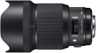
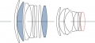

器材库 > 35mm画幅AF定焦镜头 / DG 85/1.4 HSM / Art > DG 85/1.4 HSM | Art

详细规格
镜头类型
中远摄/远摄镜头
发布日期
2016-09-20
焦距
85mm
最大光圈
f/1.4
最小光圈
f/16
视角（对角）
28.6°
镜头结构
14片/12组
非球面镜片
1片
光圈叶片
9片
最近对焦距离
85cm
最大放大倍率
1:8.5
驱动马达
HSM（超声波马达）
滤镜口径
86mm
镜头卡口
Canon EF, Nikon F, Sigma SA
防抖
否
颜色
黑色
尺寸
94.7×126.2mm
附件
镜头包，花瓣形遮光罩 LH927-02
匿名网友2018-02-27 07:024.83 分
操作性 5.00耐用性 5.00性价比 5.00解像力 5.00色彩还原 4.00机械结构 5.00
笨笨小邱2017-07-21 08:004.75 分
操作性 5.00耐用性 4.50性价比 5.00解像力 5.00色彩还原 4.50机械结构 4.50
euhii2017-04-27 10:364.67 分
操作性 4.50耐用性 4.50性价比 4.50解像力 5.00色彩还原 5.00机械结构 4.50
euhii2017-04-27 10:35
elliotliu2017-04-08 17:064.42 分
操作性 4.00耐用性 4.50性价比 5.00解像力 4.50色彩还原 4.00机械结构 4.50
兰青2017-02-09 22:285 分
操作性 5.00耐用性 5.00性价比 5.00解像力 5.00色彩还原 5.00机械结构 5.00
产品图 / 样片
DG 85/1.4 HSM | Art

DG 85/1.4 HSM | Art
评测 / 相关文章
- 人像新霸主 适马85/1.4 Art测评 （存档）
- 谁是人像镜皇 蔡司Otus85与适马85Art对比评测 （存档）
- ［试用］人像利器 适马85/1.4 art开箱实拍 （存档）
- ［资讯］人像头新标杆 DxOMark公布适马85Art成绩 （存档）
- ［资讯］DP公布2016年度最佳镜头大奖 （存档）
- ［试用］适马85mm F1.4 Art镜头实拍样片 （存档）
- ［行情］适马85/1.4 Art国内上市预售 （存档）
- ［行情］终于来了 适马85/1.4Art开始预售 （存档）
- ［资讯］适马正式发布三款高性能镜头 （存档）
- ［资讯］适马85mm与12-24mm与500mm镜头图赏 （存档）
相关文章
- ［试用］蔡司Otus85与适马85Art对比评测 （存档）
- ［试用］人像利器 适马85/1.4 art开箱实拍 （存档）
- ［资讯］人像头新标杆 DxOMark公布适马85Art成绩 （存档）
- ［资讯］DP公布2016年度最佳镜头大奖 （存档）
- ［试用］人像新霸主 适马85/1.4 Art测评 （存档）
- ［试用］适马85mm F1.4 Art镜头实拍样片 （存档）
- ［行情］适马85/1.4 Art国内上市预售 （存档）
- ［行情］终于来了 适马85/1.4Art开始预售 （存档）
- ［资讯］适马正式发布三款高性能镜头 （存档）
- ［资讯］适马85mm与12-24mm与500mm镜头图赏 （存档）
- ［影像］感受适马85/1.4ART的魅力 （原站已下线）
- ［行情］适马85/1.4 A最新低价 （原站已下线）
- ［行情］适马85 Art镜头最新低价 （原站已下线）
- ［行情］适马85 Art镜头最新低价 （原站已下线）